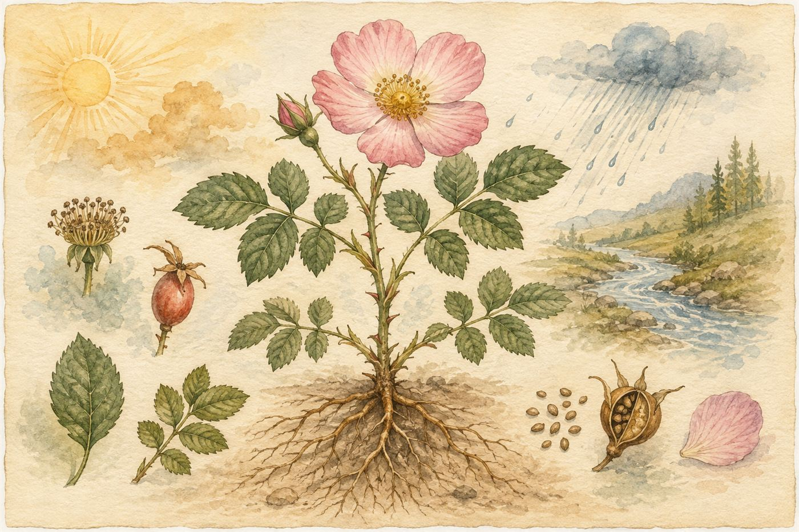
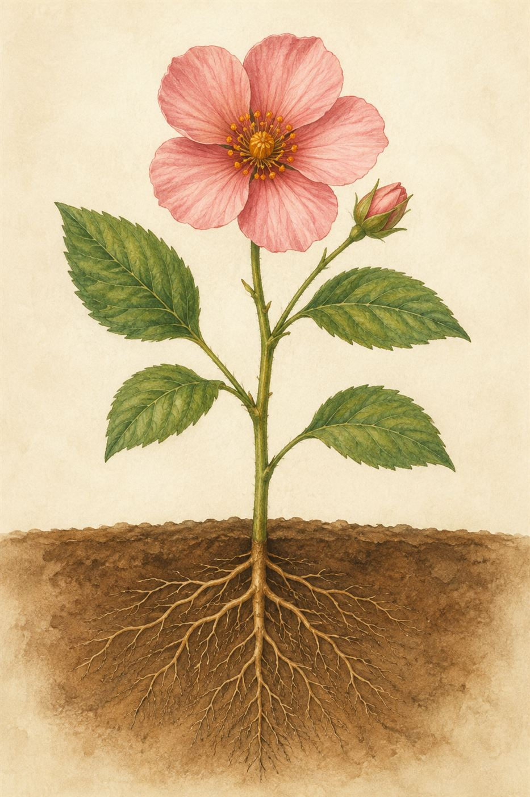

สมุดบทเรียนหลัก · การศึกษาแนววอลดอร์ฟ · ป.5
พืชคือลูกของแสงแดดและผืนดิน — สังเกต วาด และทำความรู้จักเพื่อนสีเขียวที่หล่อเลี้ยงทุกชีวิตบนโลก

แตะแต่ละส่วนของต้นไม้เพื่อดูหน้าที่ของมัน — ราก ลำต้น ใบ และดอก ทำงานร่วมกันเหมือนครอบครัวเดียว

ลองเริ่มจากรากใต้ดิน แล้วไล่ขึ้นไปจนถึงดอกที่ยอด
พืชไม่ต้องซื้ออาหาร เพราะใบของมันคือครัวที่ปรุงอาหารเองได้ โดยใช้วัตถุดิบเพียงสามอย่าง
ในใบไม้ ที่เม็ดสีเขียวชื่อ คลอโรฟิลล์ — สีเขียวของใบไม้ก็คือสีของครัวแห่งนี้เอง
ออกซิเจนเกือบทั้งหมดที่เราหายใจมาจากพืชและสาหร่าย และอาหารทุกจานเริ่มต้นจากพืชปรุงอาหารด้วยแสง
ต้นไม้ในที่มืดจะซีดเหลืองและอ่อนแอ เพราะครัวขาดแสงแดด — ลองทดลองปลูกถั่วงอกในที่มืดกับที่สว่างเทียบกันดู
ชีวิตของพืชหมุนเวียนเป็นวงกลมไม่มีที่สิ้นสุด — แตะขั้นตอนด้านล่างตามลำดับที่ถูกต้อง เริ่มจากเมล็ด
ผึ้ง ผีเสื้อ และนก ช่วยพาละอองเรณูจากดอกหนึ่งไปอีกดอกหนึ่ง พืชจึงมอบน้ำหวานเป็นของขวัญตอบแทน — นี่คือมิตรภาพที่เก่าแก่ที่สุดในธรรมชาติ
นักพฤกษศาสตร์จัดพืชเป็นกลุ่มตามลักษณะของมัน จากเรียบง่ายที่สุดไปจนถึงซับซ้อนที่สุด
เล็กจิ๋ว ไม่มีดอก ไม่มีท่อลำเลียง ชอบที่ชื้นและร่มเงา เหมือนพรมกำมะหยี่สีเขียว
ไม่มีดอก สืบพันธุ์ด้วยสปอร์ใต้ใบ ใบอ่อนม้วนเป็นก้นหอยสวยงาม
เช่น สนและปรง เมล็ดอยู่ในโคน (cone) ไม่มีผลห่อหุ้ม
ครอบครัวใหญ่ที่สุด มีดอก ผล และเมล็ด — ตั้งแต่ข้าวในนา จนถึงกล้วยไม้ในป่า
พืชเดินหนีไม่ได้ จึงต้องเปลี่ยนรูปร่างของตัวเองให้อยู่รอดในถิ่นที่มันเกิด — ใบ ราก และลำต้นที่ดูแปลกตา ล้วนมีเหตุผลซ่อนอยู่ทั้งสิ้น
ข้อสอบชอบถาม: มันฝรั่งคือ "ลำต้น" ไม่ใช่ราก เพราะมีตาที่งอกเป็นต้นใหม่ได้
พืชสร้างต้นใหม่ได้ 2 ทาง — ทางเพศด้วยเมล็ดจากดอก และทางไม่ใช้เพศจากส่วนต่าง ๆ ของต้นแม่ ชาวสวนเลือกวิธีให้เหมาะกับพืชแต่ละชนิด
เกิดจากละอองเรณูผสมกับไข่ในดอก ได้เมล็ดที่มีลักษณะผสมของพ่อและแม่
นำกิ่ง ใบ หรือรากของต้นแม่มาสร้างต้นใหม่ ได้ต้นที่เหมือนต้นแม่ทุกประการ
ตัดกิ่งหรือใบมาปักในดินชื้นให้เกิดรากใหม่
เหมาะกับ: ชบา โกสน พลูด่าง มันสำปะหลัง อ้อย
ควั่นเปลือกกิ่งบนต้น หุ้มด้วยดินชื้น รอรากงอกแล้วจึงตัดไปปลูก
เหมาะกับ: มะม่วง ลำไย ฝรั่ง ชมพู่ กุหลาบ
นำกิ่งพันธุ์ดีมาต่อกับต้นตอที่รากแข็งแรง ได้ทั้งผลดีและรากทน
เหมาะกับ: ทุเรียน ส้ม มะม่วง กุหลาบ
ต้นแม่แตกหน่อใหม่ข้างโคน แยกออกไปปลูกได้เลย
เหมาะกับ: กล้วย ไผ่ ขิง ข่า สับปะรด
เมล็ดเบามีปีกหรือขนปุย — นุ่น ยางนา ดอกดาวเรืองแห้ง
เปลือกหนาลอยน้ำได้ — มะพร้าว จิก ลำพู
ผลหวานให้สัตว์กินแล้วถ่ายเมล็ดทิ้ง หรือมีหนามเกาะติดขน — ตำลึง หญ้าเจ้าชู้
ฝักแห้งแล้วแตกดีดเมล็ดออกไป — ต้อยติ่ง ถั่ว กระถิน
ในครัวและสวนหลังบ้านของไทยเต็มไปด้วยพืชที่เป็นทั้งอาหารและยา — ภูมิปัญญาที่สืบทอดกันมานับร้อยปี ลองออกไปหาให้เจอของจริงแล้ววาดลงสมุด
| สมุนไพร | ส่วนที่ใช้ | สรรพคุณที่รู้จักกันดี |
|---|---|---|
| ขิง | เหง้า (ลำต้นใต้ดิน) | แก้ท้องอืด ขับลม บรรเทาอาการคลื่นไส้ ทำให้ร่างกายอบอุ่น |
| กระเพรา | ใบ | ขับลม แก้ท้องอืด และเป็นเครื่องเทศประจำครัวไทย |
| ฟ้าทะลายโจร | ใบและทั้งต้น | บรรเทาอาการไข้หวัดและเจ็บคอ รสขมมาก |
| ว่านหางจระเข้ | วุ้นในใบ | ทาแผลไฟไหม้น้ำร้อนลวก ช่วยให้ผิวชุ่มชื้น |
| ขมิ้นชัน | เหง้า | แก้ท้องอืด ทาแผล และให้สีเหลืองในอาหาร |
| ตะไคร้ | ลำต้น | ขับลม ขับปัสสาวะ กลิ่นช่วยไล่ยุง |
| มะกรูด | ใบและผิวผล | แต่งกลิ่นอาหาร บำรุงเส้นผม แก้วิงเวียน |
| กระเทียม | หัว (กาบใบ) | ช่วยลดไขมันในเลือด ต้านเชื้อโรค |
| ใบเตย | ใบ | แต่งกลิ่นและสีเขียวในขนมไทย ช่วยบำรุงหัวใจ |
| มะขาม | เนื้อผลและใบ | เป็นยาระบายอ่อน ๆ แก้ท้องผูก |
สมุนไพรเป็นยา จึงต้องใช้ให้ถูกชนิด ถูกส่วน และถูกปริมาณ — ต้องมีผู้ใหญ่ดูแลเสมอ พืชบางชนิดหน้าตาคล้ายกันมากแต่ชนิดหนึ่งเป็นยา อีกชนิดเป็นพิษ
ทบทวนทุกบทเรียนของพฤกษศาสตร์ในแบบฝึกหัดเดียว